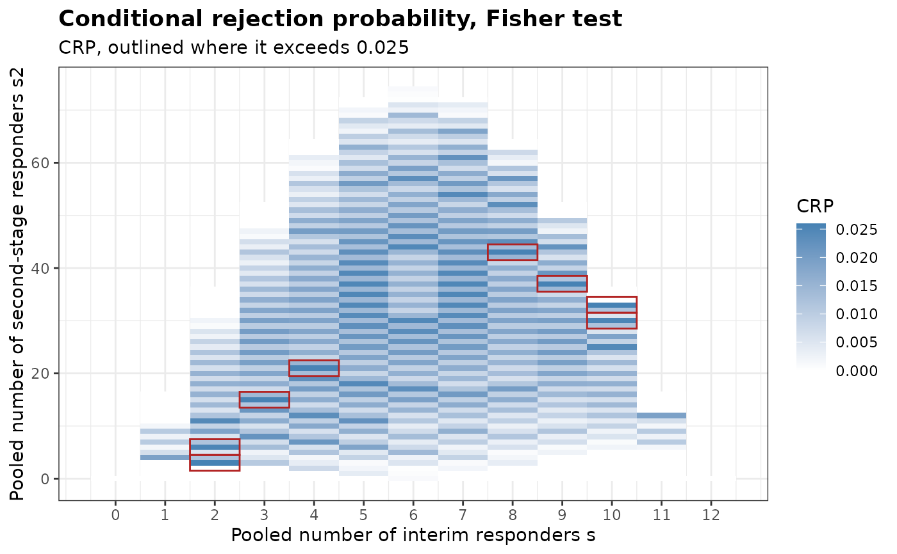
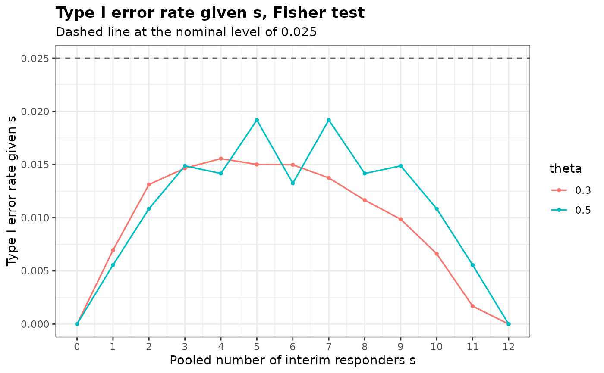

Draws the conditional rejection probabilities of a design with blinded sample size re-estimation over the pooled responder counts of the two stages, or the type I error rate given the pooled number of interim responders.
Arguments
- x
An object of class
bbssr_crp- what
Quantity to draw.
'CRP'(default) and'CRP.total'draw the corresponding column over the pairs(s, s2), shaded from white to the first colour, and outline the outcomes at which it exceeds the nominal level in the second colour.'by.s'draws the type I error rate givensfor each value oftheta, which requires an object created withtheta- main
Title.
NULLkeeps the default andNAremoves it- sub
Subtitle.
NULLkeeps the default andNAremoves it- xlab
Label of the horizontal axis.
NULLkeeps the default- ylab
Label of the vertical axis.
NULLkeeps the default- legend.title
Title of the legend.
NULLkeeps the default- colours
Two colours, for the shading of the probabilities and for the outline of the outcomes above the nominal level. They are not used for
what = 'by.s'- base_size
Base font size passed to
theme_bw()- ...
Further arguments, ignored
Examples
crp <- BinaryCondRejectBSSR(
Delta.A = 0.3, N1 = 12, N2 = 12, n.interim = c(6, 6), r = 1,
alpha = 0.025, tar.power = 0.8, Test = 'Fisher', ss.method = 'standard',
theta = c(0.3, 0.5)
)
plot(crp)

plot(crp, what = 'by.s')
